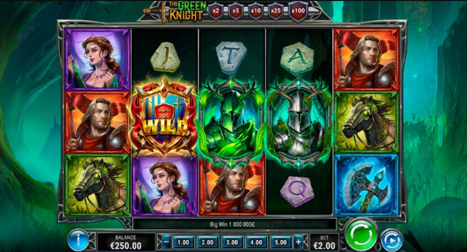
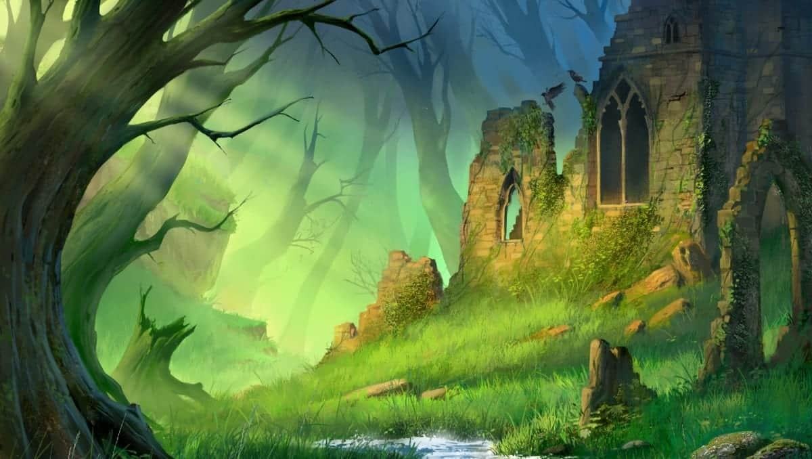
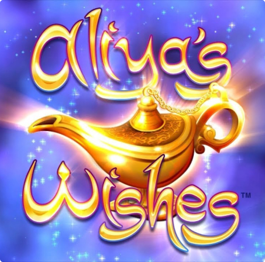
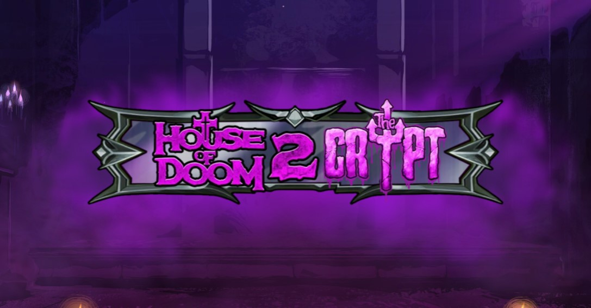

Nossos jogos são destinados ao público ADULTO acima de 18 anos. Dar um click Aceito para confirmar sua idade.
Free Slots Online
No site do Clube de Jogos, você pode jogar slots gratuitamente enquanto explora suas características, símbolos e parâmetros. Aqui estão as melhores versões de demonstração dos jogos dos principais desenvolvedores, acompanhadas de descrições completas.
Os jogos de slots online estão entre os mais populares na internet. Eles recebem ótimas críticas dos usuários devido à sua aparência cativante, tramas interessantes, gráficos de alta qualidade e à possibilidade de jogar gratuitamente sem sair de casa.
Cada slot cria sua própria atmosfera única, e na internet existem diversas opções de desenvolvimento, desde os clássicos e simples até os mais incomuns, com temas originais.
Slots Gratuitos Populares
- 
- 
Com o crescimento dos jogos de azar online, as máquinas de slots se tornaram cada vez mais populares. Isso não é surpreendente, uma vez que os jogadores não precisam mais procurar máquinas físicas para girar os rolos e formar combinações vencedoras. Basta iniciar esses jogos na internet, de forma completamente gratuita e sem a necessidade de registro, para desfrutar de momentos emocionantes e divertidos. Além disso, até mesmo as máquinas caça-níqueis clássicas adoradas por muitos, como "Fruit Shop" ou "Frog Story", foram transferidas para o mundo online. No entanto, os fabricantes de software de jogos não param por aí e continuam a criar slots mais interessantes, com enredos envolventes, gráficos incríveis e recursos de jogo adicionais.
Em termos de design e enredo, as demonstrações de jogos podem variar amplamente. Nesta página, apresentamos desenvolvimentos de fabricantes populares, como Igrosoft, NetEnt, Microgaming, Playson, Gaminator e outros. Eles se destacam por seus gráficos de alta qualidade, tramas extremamente envolventes e taxas de pagamento elevadas.
Nossos jogos
-
 The Green KnightJogar
The Green KnightJogarO símbolo do Green Knight pode aparecer em QUALQUER rolo; 3 ou mais deles acionam 5 Rodadas Grátis. O Escudo é um símbolo Wild...
-
Aliya’s WishesJogar
O símbolo do Green Knight pode aparecer em QUALQUER rolo; 3 ou mais deles acionam 5 Rodadas Grátis. O Escudo é um símbolo Wild...
-
House of Doom 2: The CryptJogar
House of Doom 2: The Crypt - é uma slot machine de vídeo 5x3 com 20 linhas de pagamento. O jogo apresenta várias temáticas que afetam a aparição de símbolos WILD no...
Quais deles são considerados os mais populares?
-
Slots 777
Esta é a queridinha de muitos, uma verdadeira clássica que costumava estar disponível apenas em máquinas físicas. Esses slots de vídeo não diferem das máquinas físicas, pois reproduzem fielmente seu design, tema e funções. Geralmente, eles têm de 3 a 5 rolos e um número mínimo de linhas (de 1 a 5). Além disso, novas variantes desses jogos clássicos continuam a ser desenvolvidas, com o símbolo "7" sempre presente.
-
Originais
Sua característica distintiva é o enredo incomum, que pode ser dedicado a filmes, contos de fadas ou até mesmo quadrinhos. A simbologia inclui imagens de personagens queridos ou heróis, e as histórias são projetadas para manter os jogadores sempre entretidos. Slots 3D. Eles se destacam por gráficos melhorados que são vívidos e realistas. Cada símbolo é detalhadamente trabalhado para criar uma sensação de presença. Além disso, há elementos de animação, e a jogabilidade é acompanhada por música.
-
Modernos
Estes são os novos slots online, que você pode jogar gratuitamente, sem registro ou mensagens de texto. Eles podem ter um número não convencional ou arranjo de rolos, e em vez das linhas de pagamento tradicionais, muitas vezes apresentam combinações especializadas. Além disso, incluem vários rounds de bônus e símbolos especiais com habilidades únicas.
-
Caça-níqueis clássicos
Estes slots são réplicas de antigas máquinas caça-níqueis terrestres. Isso inclui títulos como "Fruit Shop" e "Frog Story". Basicamente, eles reproduzem completamente as funções das máquinas físicas, mas estão disponíveis online.
-
Roleta
Versões francesa, europeia, americana e muitas outras estão disponíveis online em várias variações. Elas têm uma aparência o mais realista possíve.
-
Slots temáticos de cartas
Estes incluem jogos de poker, blackjack, bacará e outros entretenimentos interessantes. Suas regras podem ser clássicas ou ligeiramente modificadas.